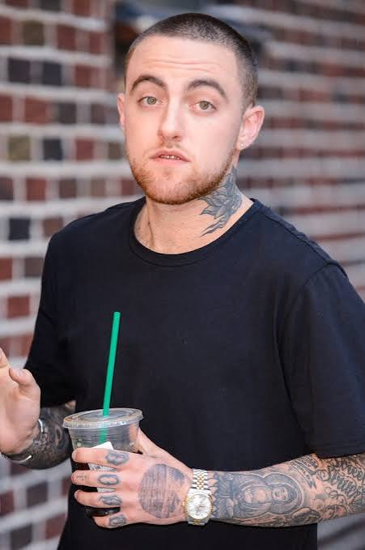
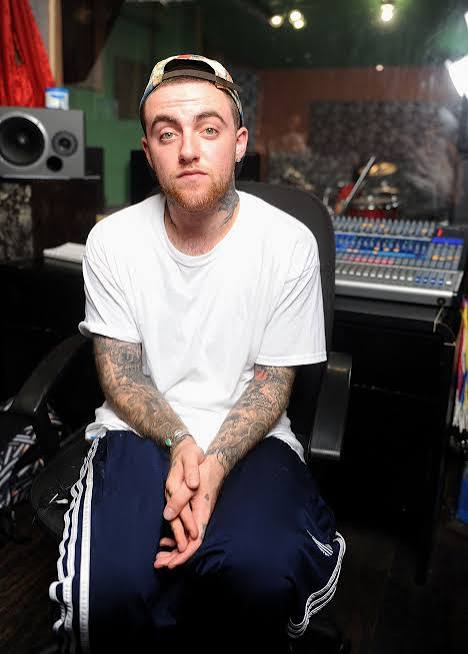

Release: June 18, 2013
Label: Rostrum Records
Producers: Mac produced a large chunk of the album himself under his producer alias, Larry Fisherman, alongside beats from Flying Lotus, Pharrell Williams, Clams Casino, and Alchemist.
The title wasn't just a clever phrase—Mac recorded almost the entire album in his dark LA studio with nature documentaries and movies playing on mute on a giant TV screen. He matched the rhythm and mood of his music to visual moments on screen, notably keeping the 2011 French documentary Turtles Can Fly and Beavis and Butt-Head Do America on repeat.
WMWTSO was released on June 18, 2013—the exact same day as Kanye West’s Yeezus and J. Cole’s Born Sinner. Rather than moving his release date to avoid competition, Mac embraced the chaos, tweeting out support for all three projects and still landing a #3 debut on the Billboard 200.


The emotional centerpiece of the album, "Remember," was written for Mac's close friend Reuben Mitrani, who tragically passed away in 2012. Mac later founded the "Remember Music" record label imprint in his honor.